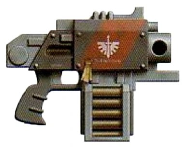

Bolter
| Bolter | |
|---|---|
 An Umbra pattern bolter, from a Legion armoury plate Artwork © Games Workshop | |
| Type | Rocket-propelled explosive projectile weapon |
| Calibre | .75 (older patterns .50, .60 and .70) |
| Standard Firstborn pattern | Mark Vb Godwyn |
| Standard Primaris pattern | Mark II Cawl bolt rifle |
| Magazine | Sickle magazine of 30 bolts (Godwyn); drum magazines in some patterns |
| Introduced | c. 800.M30, Great Crusade |
| Makers | Adeptus Mechanicus forge worlds; Chapter armouries |
| Users | Adeptus Astartes; Adepta Sororitas; Adeptus Arbites; officers of the Astra Militarum; Chaos Space Marines |
The bolter, also called the boltgun, is a heavy hand-held weapon that fires small rocket-propelled shells, called bolts, which pierce a target and then explode inside it. It is the standard weapon of the Adeptus Astartes, and it is regarded in the Imperium as the arm that the Emperor of Mankind meant for his warriors. The bolt is a .75 calibre round with its own propellant, and a mass-reactive fuse that detonates it after it has penetrated armour or flesh. Its roar and its dull wet detonation are among the sounds the enemies of the Imperium know best.[1][2]
The bolter has no one form. Its basic design is a good deal older than the Imperium, and the Mechanicus has made hundreds of patterns of it, each with its own mechanism and fittings. Smaller versions, called bolt pistols, are used as sidearms, and the Primaris Space Marines carry the longer bolt rifle. The weapon is far too heavy and recoils too hard for an unaugmented man, and it is made to answer only to the genetic code of a Space Marine; it is a crime to carry a bolt or a bolter without sanction. A few patterns, such as the Godwyn-De'az, are made for mortal hands.[2][3]
Design
[edit]A conventional firearm fires a bullet by the explosion of a charge in a case. A bolt carries its propellant in its body, and acts as a small rocket. The weapon uses two stages. A small charge forces the bolt out of the barrel at high speed and lights the rocket motor at the same moment, and the motor takes the bolt on to its target. This prevents the gas pressure of the motor from warping the barrel. The mass-reactive fuse, which is set to fire after the bolt has penetrated, makes the damage greatest inside the target.[2]
A bolter of the standard Firstborn pattern is a large semi-automatic weapon without a stock, held like a pistol. A Space Marine's armour absorbs most of its recoil, and a stock would hinder the movement of the armoured arm. It carries a sickle-shaped magazine, a counter that shows the number of bolts left, a biometric sensor in the grip that checks the user's genetic code, and an integral targeter that links to the auto-senses of the wearer's power armour. It can fire a burst of up to four bolts with one pull of the trigger.[1][2]
The weapon needs far more care than a lasgun. A bolter that is not cleaned will jam, and the Space Marines tend theirs with rites and prayers to its Machine spirit, and treat it as an object of devotion. Its ammunition is heavy, and a Chapter on campaign uses a mountain of it. These are the reasons why the Astra Militarum does not issue it to ordinary soldiers.[2]
History
[edit]Before the Crusade
[edit]Weapons that fire rocket-propelled shells are very old. The Mechanicus records show that some were made in the Dark Age of Technology, and that the plans of the bolter were among those that survived the Age of Strife on Terra. When the Emperor of Mankind raised the first Space Marine Legions in the closing years of the 30th millennium, they were armed with archeotech volkite weapons, which are thermal ray guns of great power. These were difficult to make, short in range and hard to maintain.[2]
The Great Crusade
[edit]The demands of the Crusade, which began in 798.M30, were more than the forges could meet with volkite weapons, and the Mechanicus began to produce the bolter in its place, c. 800.M30.[a] The Crusade pattern of this time was the first of the bolters of the Legions. Several other early patterns used other calibres: the Tigris pattern fired .60 calibre bolts, the Phobos pattern .70, and the Ikanos pattern of bolt pistol .50. The .75 calibre became the standard soon after, and by the time of the Horus Heresy (005.M31) the bolter had pushed volkite weapons out of general use. Each Legion had its own patterns of the Umbra, Tigrus and Phobos lines, and some, such as the Night Lords and the Word Bearers, favoured combi-weapons that joined a bolter to a flamer or a melta gun.[3]
The Heresy and after
[edit]The Traitor Legions took the patterns of their own armouries into the Eye of Terror in 014.M31, and their warriors use these older patterns still. The Loyalists standardised the weapon after the war. The Mark Vb Godwyn pattern, the largest and most powerful of the standard bolters, which was based on an ancient STC design, was adopted by the Chapters and has remained the standard weapon of the Firstborn for ten millennia. The Codex Astartes, written by Roboute Guilliman c. 021.M31, names it as the primary weapon of a battle-brother. The Chapters made their own versions of the Godwyn: the Angelus pattern of the Blood Angels, a wrist-mounted bolter with a drum magazine, and the Fenris pattern of the Space Wolves.[1][2]
The Era Indomitus
[edit]The Primaris Space Marines brought a new family of bolt weapons. Belisarius Cawl designed the Mark II bolt rifle, called the Cawl pattern, which is longer and more accurate than the Godwyn, with a lighter recoil and a heavier bolt. Its relatives include the auto bolt rifle and the stalker bolt rifle, the bolt carbine of the Incursors, and the heavy bolt rifle of the Heavy Intercessors. The Primaris Marines also use the bolt pistol and the heavy bolt pistol. The Godwyn is still the common weapon of the Firstborn, and the two systems are used together in many Chapters.[4][5]
Patterns
[edit]| Pattern | Introduced (Imperial date) | User | Notes |
|---|---|---|---|
| Crusade | c. 800.M30 | The Legions of the Great Crusade | The original pattern |
| Tigris and Phobos | c. 800–900.M30 | Legion armouries | .60 and .70 calibre; later versions merged into the Umbra and Tigrus lines |
| Umbra | c. 990.M30 | The Legions; the Dark Angels and others | A heavy pattern of the late Crusade |
| Godwyn-De'az | c. M31 | Officers, Adeptus Arbites | Made for mortal hands; unaugmented users can fire it with a brace |
| Mark Vb Godwyn | c. 019.M31 | The Firstborn Space Marines | The standard bolter of the Imperium; 30-bolt sickle magazine |
| Angelus | M31 or later | The Blood Angels | Wrist-mounted, drum-fed; fires bloodshard shells |
| Condemnor | M36 or later | Ordo Hereticus; Sororitas | Bolter with a silver-stake crossbow, for use against psykers |
| Mark II Cawl bolt rifle | 999.M41 | The Primaris Space Marines | Longer and more accurate than the Godwyn |
Ammunition
[edit]The standard bolt is the mass-reactive round described above. The armouries also keep a large range of special bolts, of which the best known are the kraken round, which has a hard penetrating tip; the hellfire round, which fills a target with acid; the vengeance round, which has a heavy charge; and the dragonfire round, which sets the target alight. Their makers are the Mechanicus and the Chapters' own armouries. The Adeptus Arbites punishes the possession of even a single bolt by a citizen with a severe sentence.[2][3]
Timeline
[edit]| Date | Event |
|---|---|
| M18 – M25 | Rocket-propelled shell weapons made in the Dark Age of Technology. |
| c. 700.M30 | The first Legions are armed with volkite weapons. |
| 798.M30 | The Great Crusade begins. |
| c. 800.M30 | The Crusade pattern bolter enters production. |
| 005.M31 | The Horus Heresy begins; the bolter is the standard weapon of all Legions. |
| 014.M31 | The Traitor Legions withdraw into the Eye of Terror with their patterns. |
| c. 021.M31 | The Codex Astartes names the bolter the weapon of a battle-brother. |
| 999.M41 | The Mark II Cawl bolt rifle is revealed in the Ultima Founding. |
See also
[edit]Notes
[edit]- ^ Estimated; no record gives an exact year.
References
[edit]- ^ a b c Codex: Space Marines (9th Edition), pp. 138, 141. Games Workshop. Codex Supplement: Deathwatch (9th Edition), pg. 53. Games Workshop.
- ^ a b c d e f g h Codex Adeptus Astartes - Space Marines (8th Edition), pp. 148, 156. Games Workshop. Codex Heretic Astartes - Chaos Space Marines (8th Edition), pg. 18. Games Workshop.
- ^ a b c Codex: Space Marines (8th Edition) (Revised Codex), pp. 70, 74-75, 111, 123, 185. Games Workshop. Codex: Vanguard Space Marines (8th Edition), pp. 7-10. Games Workshop.
- ^ Warhammer 40,000: Rulebook (8th Edition), pg. 60. Games Workshop. Thorpe, Gav. The Purging of Kadillus (novel). Black Library.
- ^ McNeill, Graham. Warriors of Ultramar (novel). Black Library. Codex: Space Marines (7th Edition) (Digital Edition), "Armoury of the Space Marines - Special Issue Wargear - Special Issue Ammunition", pp. 447-448. Games Workshop.